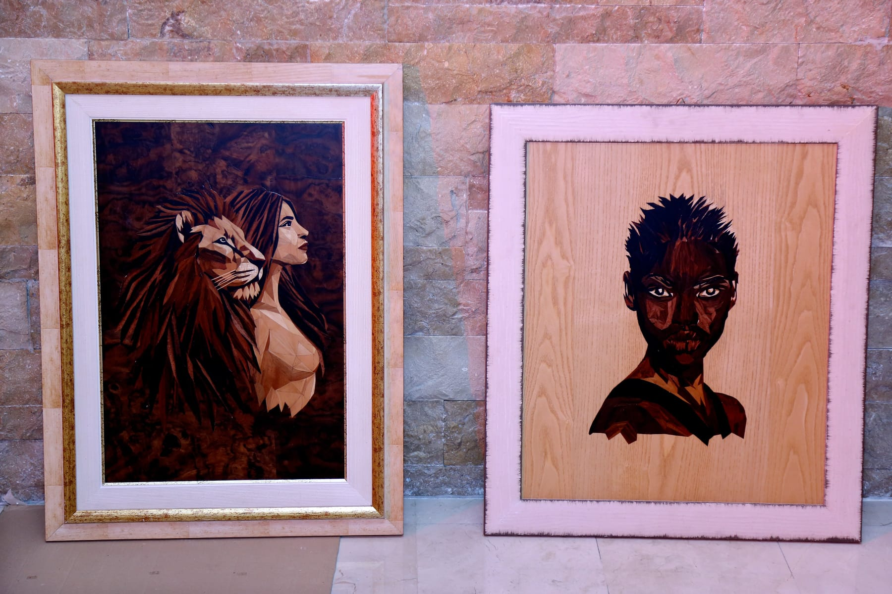
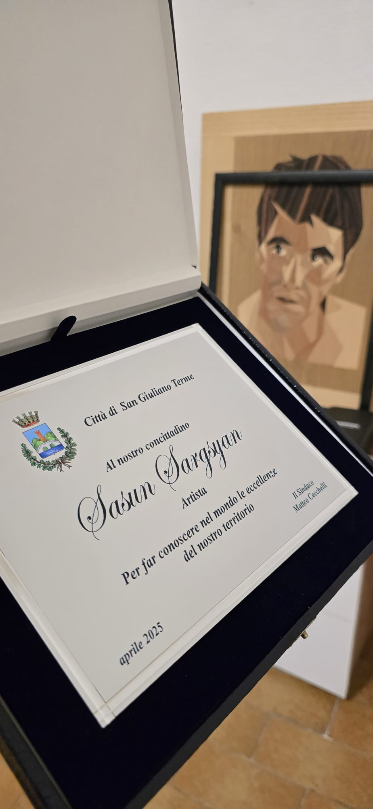

Un portrait
sur mesure,
découpé à la main dans le bois
Le visage d’un être cher, entièrement recréé à la main en placage de bois naturel — une œuvre qu’aucune machine ne peut reproduire et que personne d’autre ne possédera jamais.
Sur commande privée · Votre aperçu sous 24 heures

Voyez votre portrait avant de vous décider — chaque commande commence par un aperçu privé, préparé sous 24 heures.
De la photographie à l’objet de famille
Envoyez une photo
Envoyez la photographie que vous souhaitez voir recréée.
Aperçu privé
Recevez un aperçu polygonal sous 24 heures.
Validez & engagez-vous
Validez le concept, puis réservez votre créneau avec un acompte.
Création & livraison
Suivez sa naissance, puis recevez-le partout dans le monde.


L’artiste avec une visiteuse devant Black Woman — World Art Dubai, 2024
Exposé à Dubaï et en Toscane

World Art DubaiDubai World Trade Centre, mars 2024

GesùPala Todisco, San Giuliano Terme

Reconnaissance municipaleComune di San Giuliano Terme
- Objet
- Montrer que chaque œuvre est signée, numérotée et enregistrée
- Recommandé
- 4:5 · 1200×1500px
- Statut
- Photographie en attente
Certificat d’authenticitéSigné et numéroté, avec chaque œuvre
Chaque portrait fait l’objet d’un devis personnel
Trois formats — Intime, Signature et Chef-d’œuvre — chacun chiffré en privé, selon le niveau de détail qu’exige votre portrait.
Découvrir les trois formatspar portrait
par commande
dans notre atelier
La collection

Un projet en cours ?
Devis par projet et commandes sur mesure pour architectes d’intérieur, architectes et hôtellerie — des œuvres dimensionnées et encadrées pour l’espace.
Découvrir l’offre professionnelle
Le bois n’est pas
qu’un matériau
« Par l’art minutieux de la marqueterie, je transforme chaque pièce de placage en une œuvre d’art détaillée — une danse lente et attentive entre précision et créativité. »
Lire toute l’histoire →Votre histoire, en bois
Chaque portrait commence par une photographie — et devient une œuvre que vous serez seul à posséder.
Commencer votre portrait